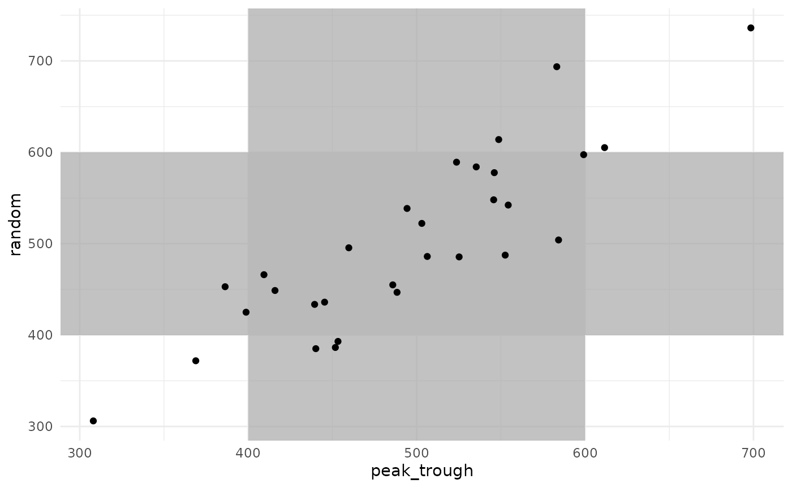

Effect of sample timing (YAML example)
sample_timing_yaml.Rmd#> - Retrieving model definition ()...
#> - Package pkvancothomson not installed yet.
#> - Compiling model.
#> * Adding model definition to R package.In this vignette, we will demonstrate the following tools:
- Using {mipdtrial} to simulate a trial, with the trial design specified using yaml files.
- We will have two trial “arms”, varying only by the therapeutic drug monitoring strategy used. The two arms will be defined by two yaml files.
Motivation
A hospital currently collects two samples for adjusting vancomycin doses: one at 1-hr post-dose and another at 9 hours post-dose. They want to compare the impact on target attainment (an area under the curve (AUC) of 400-600 mg*h/L) if they were to switch to collecting a single sample at 5 hours post-dose.
Here is how we could answer that problem using simulation!
1. Define trial design
This simulated trial will have two arms:
- Two samples, collected 1 and 9 hours after a dose
- One sample, collected 5 hours after a dose
In each case, we will collect the samples in the fourth dosing interval, and for simplicity, we will assume all patients are receiving vancomycin twice daily, infused over 2 hours.
We will adjust the fifth dose based on these levels, aiming for a daily AUC of 400-600 mg*h/L by day 6.
These designs are implemented in YAML files supplied with the package as follows:
name: Test different sampling designs.
description: Sampling design 1 - peak / trough
designs:
initial_regimen:
method: model_based_starting_dose
regimen:
interval: 12
type: infusion
t_inf: 1
settings:
auc_comp: 3
dose_resolution: 250
dose_grid: [250, 5000, 250]
target:
targettype: auc24
targetmin: 400
targetmax: 600
at: 6
anchor: day
sampling:
offset: [1, 9]
at: [4, 4]
anchor: dose
regimen_update:
at: [5]
anchor: dose
update_type: dose
dose_optimization_method: map_adjust_dose
sim:
lib: pkvancothomson
est:
lib: pkvancothomsonWe can read this spec into R using
create_trial_design():
arm1 <- create_trial_design(
file = system.file(package = "mipdtrial", "md/sample_timing1.yaml")
)
arm2 <- create_trial_design(
file = system.file(package = "mipdtrial", "md/sample_timing2.yaml")
)2. Create a set of digital patient covariates
For this example, we will randomly generate a set of weights and creatinine clearances (CRCLs) for our synthetic data set.
set.seed(15)
dat <- data.frame(
ID = 1:30,
weight = rnorm(30, 90, 25), # kg, normally distributed
crcl = exp(rnorm(30, log(6), log(1.6))) # L/hr, log-normally distributed
)We will use the Thomson (2009) model, which accepts additional clearance from hemodialysis as a covariate. Let’s set that to zero in our data set.
Other models might require fat-free mass or other calculated covariates. This would be a good time to do that sort of processing on your data set!
dat$CL_HEMO <- 0Here are the first few rows of our data set:
head(dat)
#> ID weight crcl CL_HEMO
#> 1 1 96.47057 4.827349 0
#> 2 2 135.77802 6.013269 0
#> 3 3 81.50954 11.863322 0
#> 4 4 112.42995 8.546496 0
#> 5 5 102.20041 9.448520 0
#> 6 6 58.61535 7.477850 0We need to link the covariates in our data set to the covariates expected in the model.
cov_mapping <- c(
WT = "weight",
CRCL = "crcl",
CL_HEMO = "CL_HEMO"
)3. Simulate a trial!
Patients will get a model-based dose (using population PK parameters), and then this dose will be adjusted based on the MAP Bayesian fit made using the collected samples.
Individual PK parameters will be randomly generated based on the interindividual variability described in the model, and residual variability will be added to each sample collected using the error model described in the model.
res1 <- run_trial(
design = arm1,
data = dat,
cov_mapping = cov_mapping,
seed = 15,
progress = FALSE
)
#> ℹ Starting simulations in 1 threads
#> ℹ Post-processing results
res2 <- run_trial(
design = arm2,
data = dat,
cov_mapping = cov_mapping,
seed = 15,
progress = FALSE
)
#> ℹ Starting simulations in 1 threads
#> ℹ Post-processing results4. Analyze results
We are interested in AUC target attainment. How did target attainment compare between the two arms of the trial?
results <- bind_rows(
res1$final_exposure %>% mutate(sampling_design = "peak-trough"),
res2$final_exposure %>% mutate(sampling_design = "mid-interval"),
)
target_attainment <- results %>%
mutate(ontarget = ifelse(auc_true >= 400 & auc_true <= 600, 1, 0)) %>%
group_by(sampling_design) %>%
summarize(prop_on_target = 100 * mean(ontarget))
target_attainment %>%
ggplot() +
aes(x = sampling_design, y = prop_on_target) +
geom_bar(stat = "identity") +
theme_minimal() +
theme(
panel.grid.major.x = element_blank()
) +
labs(
x = "Sampling strategy",
y = "Percent on target (%)"
)Target attainment was high and varied little between the two arms, providing evidence to support the move from collecting two samples to collecting a single sample per dosing interval.
Because we are simulating each sampling strategy in each patient, we can also look at how each patient responded to each sampling strategy.
data.frame(
peak_trough = res1$final_exposure$auc_true,
random = res2$final_exposure$auc_true
) %>%
ggplot() +
aes(x = peak_trough, y = random) +
geom_rect(
aes(xmin = 400, xmax = 600, ymin = -Inf, ymax = Inf),
fill = "grey70",
alpha = 0.05
) +
geom_rect(
aes(ymin = 400, ymax = 600, xmin = -Inf, xmax = Inf),
fill = "grey70",
alpha = 0.05
) +
geom_point() +
theme_minimal()
There is a strong correlation in final AUC between the two sampling strategies. Some patients were under-exposed or over-exposed in both strategies, while others were on-target in one strategy but not in the other.